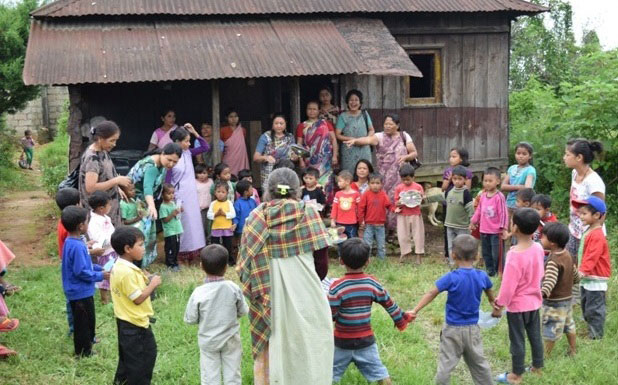
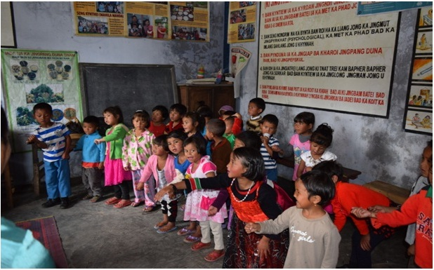
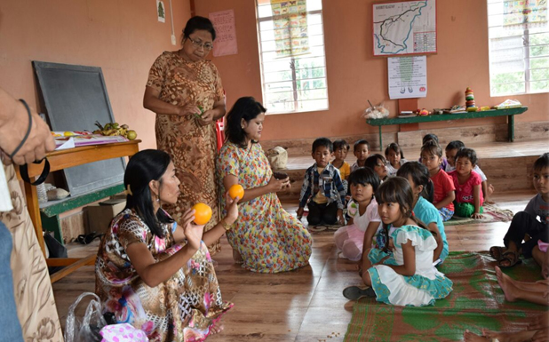
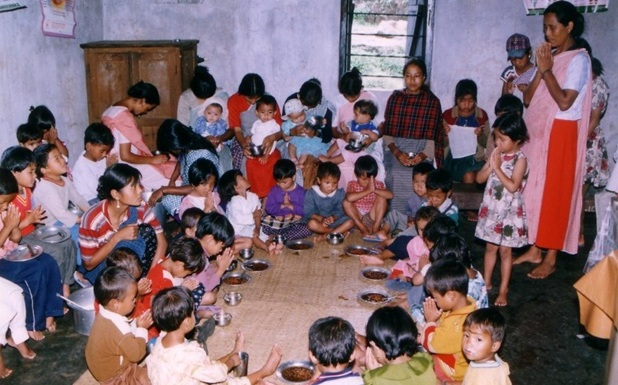

Child Welfare: Centrally Sponsored Schemes - Integrated Child Development Services
Launched in 1975 in 33 Blocks of the Country, ICDS is a unique early childhood development programme aimed at addressing the health, nutrition and development needs of young children, pregnant and nursing mothers. In Meghalaya the first project was launched on an experimental basis at Songsak C&RD Block, East Garo Hills District in the same year. Since then, the Department has come a long way in expanding the ICDS projects to the 39 Community and Rural Development Blocks and 2 Urban ICDS Projects at Shillong and Tura through a network of 5896 Anganwadi Centre.
ICDS was designed to promote holistic development of children under 6 years, through the strengthened capacity of caregivers and communities with improved access to basic services at the community level.

POSHAN Abhiyaan
POSHAN Abhiyaan was launched on International Women’s Day (March 8) in 2018 to boost nutrition among children and women through Behavioral Change while addressing malnutrition across the country through components like Convergence, ICT Application, Community Mobilization, Capacity Building, Incentives and Awards, and Innovations.
The Objectives of the Scheme is to Prevent and reduce Stunting, Under-nutrition (Underweight prevalence), Low Birth Weight @2% per annum and prevalence of Anaemia in Children (0-6 years) @3% per annum.
Reduce the prevalence of Anaemia amongst Women and Adolescent Girls (15-49 years) @3% per annum.
To further strengthen the Abhiyaan and prevent backsliding of improved nutrition indicators, Mission Poshan 2.0 was launched by Hon’ble Finance Minister Nirmala Sitharaman in February 2021. The Government has decided to devote attention and resources towards integrating numerous nutrition schemes in the country. Mission Poshan 2.0 brings together the Integrated Child Development Services (ICDS)—Anganwadi Services, Supplementary Nutrition Programme, Poshan Abhiyaan, Scheme for Adolescent Girls and National Crèche Scheme. The objective is to implement a comprehensive, unified strategy to strengthen nutritional content, delivery, outreach and outcome, with renewed focus on developing practices that nurture health, wellness and immunity to disease and malnutrition in the country.
- Under POSHAN 2.0, convergence of schemes and programmes of different ministries will be a major focus and the District Collectors will be the nodal point for monitoring the Nutritional Status of the District.
- A new software tool called the Poshan Tracker has been launched by GOI during 2021 to track every eligible beneficiary of an Anganwadi centre.
- lt is a robust digital technology platform and management information system which will help the nutrition mission to scale efficiently, thereby generating significant positive impact and documentation thereof. It is implemented in all 5896 Anganwadi Centres.
6 Services of ICDS:
| Services | Target Group | Service provided by | (i) Supplementary Nutrition | Children below 6 years, Pregnant & Nursing Mothers (P&NM) |
Anganwadi Worker and Anganwadi Helper |
|---|---|---|
| (ii) Pre-School Education | Children 3-6 years | Anganwadi worker and Anganwadi helper |
| (iii) Immunization | Children below 6 years, Pregnant & Nursing Mothers (P&NM) |
In collaboration with Health Department |
| (iv) Health Check-up | Children below 6 years, Pregnant & Nursing Mothers (P&NM) |
In collaboration with Health Department |
| (v) Referral Services | Children below 6 years, Pregnant & Nursing Mothers (P&NM) |
In collaboration with Health Department |
| (vi) Nutrition & Health Education | Women (15-45 years) | In collaboration with Health Department |

Supplementary Nutrition Programme
Supplementary Nutrition Programme (SNP) is one of the core components of ICDS scheme. The main objective is to bridge the calorie gap between the recommended Dietary Allowance (RDA) and the Average Daily Intake (ADI) of children aged 6 months to 6 years and pregnant & lactating mothers.
The Supplementary Nutrition Programme has two components:
- Morning snacks & hot cooked meals served daily at the AWC to all children between 3-6 years attending Preschool at AWC for 25 days in a month.
- Take Home Ration in the form of RTE Energy Dense Food is given for children 6 months to 3 years and pregnant/lactating mothers.

Coverage of beneficiaries as on January 2022
Children 6 month – 3 years - 198043
Children 3-6 years - 232883
Pregnant and nursing mothers - 67127
AWW & AWH - 5896 & 4630
Growth Monitoring of Children and Nutrition Surveillance are important activities of ICDS at the grass root level. Weight for age growth charts are maintained for all children below 5 years as per WHO Child Growth Standards. It is through this mechanism that nutritional status of children is identified to ensure early identification and intervention.

| Normal | Moderately Malnourished (yellow) | Severely Malnourished (orange) | Total No. of children weighed |
|---|---|---|---|
| 312556 | 11711 | 405 | 324672 |
Non Formal Pre School Education/ ECCED
- Non formal preschool education for children 3-6 years is one of the most important components of ICDS. It aims at providing sustained activities through joyful play way method that will help the child to be ready for regular schooling.
- ECCE services at the AWC: - The non-formal education session are followed by Supplementary Nutrition, Growth Monitoring and other related interventions.
- Total number of beneficiaries enrolled under Non Formal Pre School Education 3-6 years is 229142 (December, 2021)
Scheme for Adolescent Girls – SAG is being implemented using the platform of Anganwadi Services of Umbrella ICDS Scheme through Anganwadi Centres (AWCs)
The Scheme cover out of School girls in the age group of 11-14 years. The out of school girls in the age group of 11+ to 14 years, are entitled for supplementary nutrition under the scheme they will also receive life skills education, nutrition and health education awareness about socio-legal issues, existing public services etc. The scheme aims at motivating out of school girls to go back to formal schooling or vocational /skill training under non-nutrition component of the scheme.